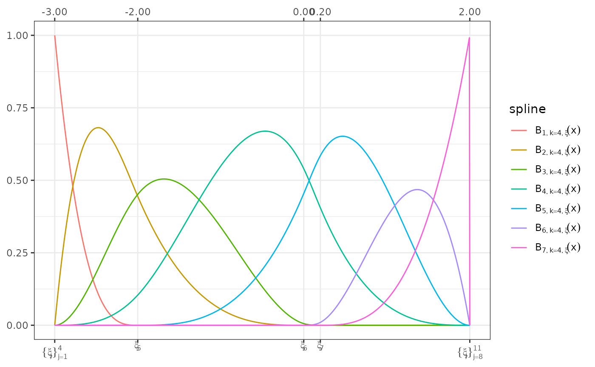
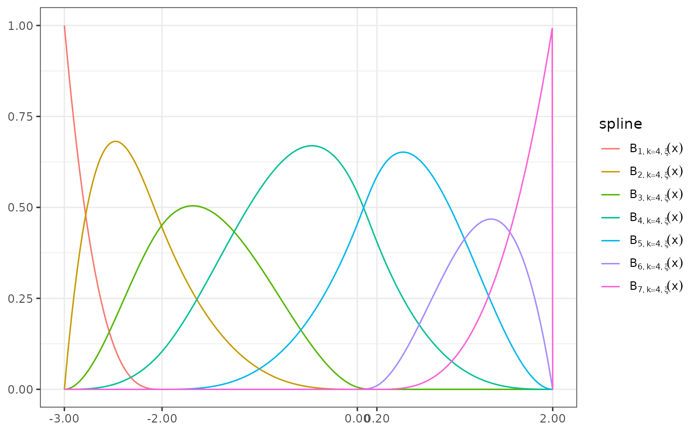
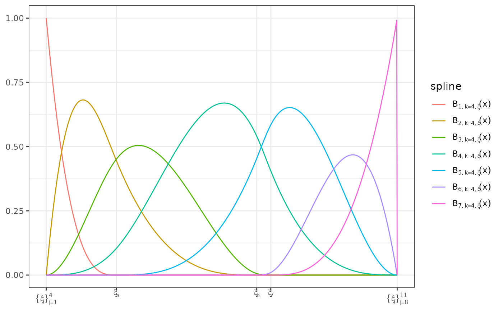
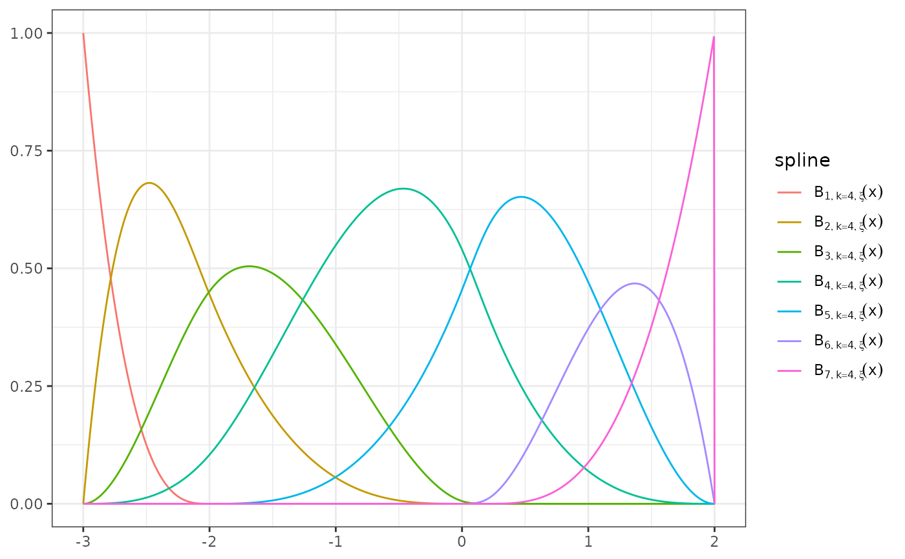
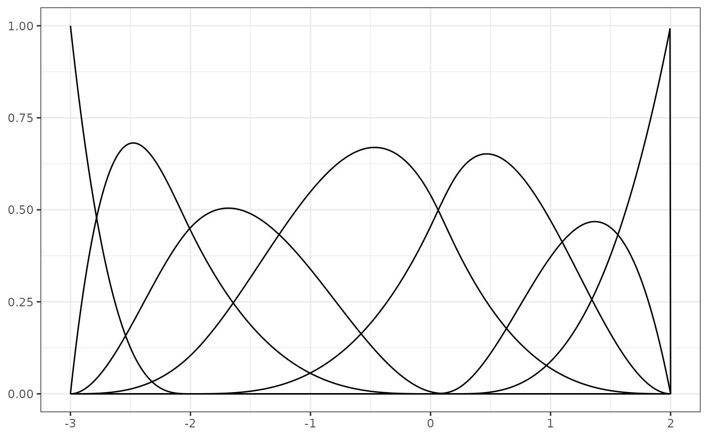
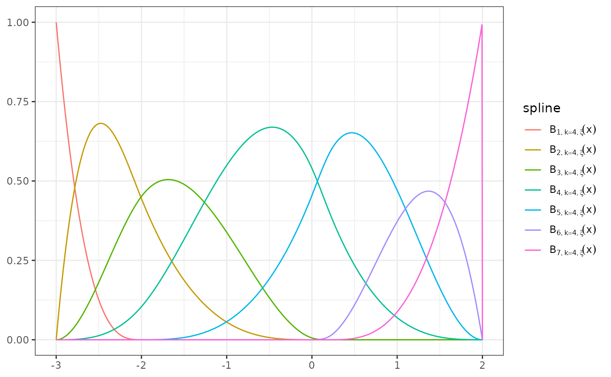
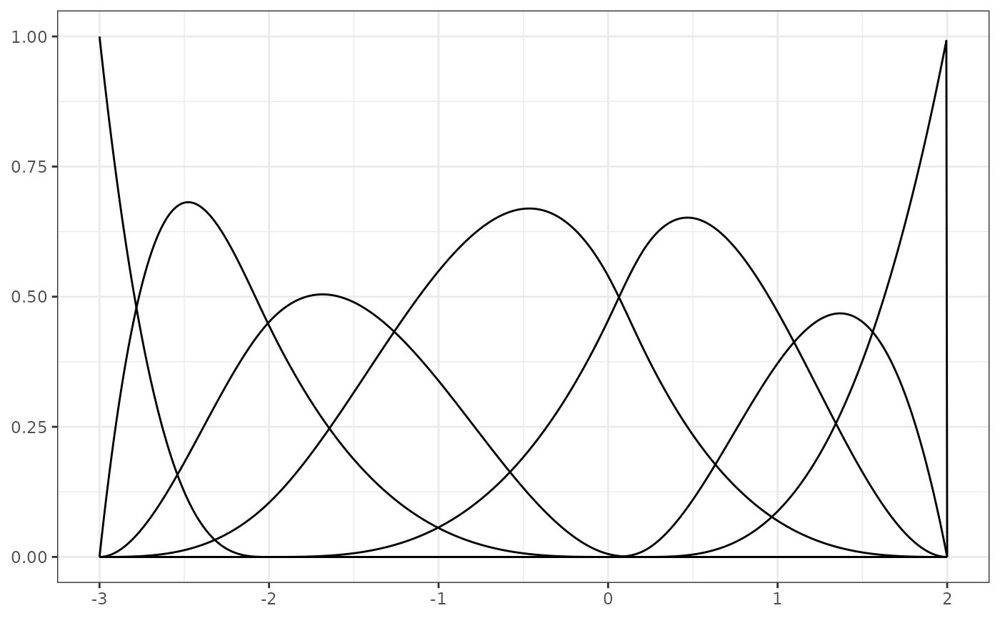

Wrapper around several ggplot2 calls to plot a B-spline basis
Usage
# S3 method for cpr_bs
plot(x, ..., show_xi = TRUE, show_x = FALSE, color = TRUE, digits = 2, n = 100)Arguments
- x
a
cpr_bsobject- show_xi
logical, show the knot locations, using the Greek letter xi, on the x-axis
- show_x
logical, show the x values of the knots on the x-axis
- color
logical, if
TRUE(default) the splines are plotted in color. IfFALSEall splines are black lines.- digits
number of digits to the right of the decimal place to report for the value of each knot.
- n
number of values to use to plot the splines, defaults to 100
- ...
not currently used
Examples
bmat <- bsplines(seq(-3, 2, length = 1000), iknots = c(-2, 0, 0.2))
#> Warning: At least one x value >= max(bknots)
plot(bmat, show_xi = TRUE, show_x = TRUE)

plot(bmat, show_xi = FALSE, show_x = TRUE)

plot(bmat, show_xi = TRUE, show_x = FALSE) ## Default

plot(bmat, show_xi = FALSE, show_x = FALSE)
 plot(bmat, show_xi = FALSE, show_x = FALSE)

plot(bmat, show_xi = FALSE, show_x = FALSE, color = FALSE)

plot(bmat, show_xi = FALSE, show_x = FALSE)

plot(bmat, show_xi = FALSE, show_x = FALSE, color = FALSE)
